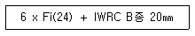

천장크레인운전기능사 (2016-04-02 기출문제)
1과목: 임의 구분
1. 훅이 지상에 도달했을 경우 드럼에는 와이어로프가 최소 몇 회의 감김 여유가 있어야 하는가?
- 감겨있지 않아도 된다.
- 최소 1회 이상
- 최소 2회 이상
- 최소 4회 이상
(정답률: 83%)

2. 감속기에 대한 설명으로 옳지 않은 것은?
- 횡행 장치에서는 라인 샤프트에 위치 한다.
- 주행 장치의 감속장치는 기어 박스에 넣어 오일로 채운다.
- 기어 감속기란 기어를 이용한 속도변환기를 말한다.
- 감속기에 사용되는 스퍼기어는 회전운동을 직선운동으로 전달한다.
(정답률: 55%)
3. 팬던트 또는 무선원격제어기를 사용하여 작업 바닥면에서 조작시 화물과 운전자가 함께 이동하는 크레인의 주행 속도는?
- 분당 45m 이하
- 분당 65m 이하
- 분당 85m 이하
- 분당 100m 이하
(정답률: 67%)
4. 주행레일의 높이편차에 대한 설명으로 알맞은 것은?
- 기준면으로부터 최대 ±10㎜ 이내
- 기준면으로부터 최대 ±15㎜ 이내
- 기준면으로부터 최대 ±20㎜ 이내
- 기준면으로부터 최대 ±25㎜ 이내
(정답률: 71%)
5. 주행, 횡행, 권상 등에서 과행(안전상 고려한 운전한계선을 초과)을 방지하는 장치는?
- 타임 릴레이
- 컨트롤러
- 리미트 스위치
- 브레이크
(정답률: 88%)
6. 전기기계·기구의 충전전로에 접근하는 장소에서 크레인의 안전 사항이 아닌 것은?
- 해당 충전전로를 이설 할 것
- 해당 충전전로에 방호구를 설치 할 것
- 감전의 위험을 방지하기 위한 방책을 설치 할 것
- 현저히 곤란한 경우라도 작업감시인은 두지 말고 운전자에게 절연용 장갑 및 보호구를 착용시킬 것
(정답률: 85%)
7. 크래브(crab)의 급정지 시 영향을 주지 않는 요소는?
- 와이어 로프
- 크라브 자체
- 횡 행차륜
- 주행차륜
(정답률: 60%)
8. 직류 전동기에 이용되는 속도 제어용 브레이크는?
- 다이나믹 브레이크
- 메카니컬 브레이크
- 마그네틱 브레이크
- 유압압상 브레이크
(정답률: 55%)
9. 크레인 구조부분의 지진하중은 옥외에 단독으로 설치되는 것에 대하여 크레인 자중(권상하물 제외)의 몇 퍼센트에 상당하는 수평하중을 지진하중으로 고려하여야 하나?
- 50%
- 25%
- 15%
- 5%
(정답률: 39%)
10. 천장크레인에서 완충장치의 종류가 아닌 것은?
- 유압 버퍼 스토퍼
- 고무 버퍼 스토퍼
- 강철 버퍼 스토퍼
- 스프링 버퍼 스토퍼
(정답률: 81%)
11. 전자 브레이크에서 전자석 부분의 과열 원인이 아닌 것은?
- 가동 철심이 완전히 부착되지 않을 때
- 전원의 규정 전압 초과 시
- 전선의 부분 단락 시
- 드럼(풀리)과 브레이크슈의 틈새 과다
(정답률: 58%)
12. 천장크레인 전동기의 전압이 440V일 때 절연저항 값은?
- 0.1MΩ 이상
- 0.2MΩ 이상
- 0.3MΩ 이상
- 0.4MΩ 이상
(정답률: 70%)
13. 거더의 중앙부에 정격하중을 매달았을 경우의 허용 굽힘량은?
- 스팬의 1/500을 초과하지 않을 것
- 스팬의 1/600을 초과하지 않을 것
- 스팬의 1/700을 초과하지 않을 것
- 스팬의 1/800을 초과하지 않을 것
(정답률: 69%)
14. 하나의 제어기로 주행과 횡행 또는 주권과 보권을 같이 사용할 수 있는 것은?
- 수동 드럼형 제어기
- 캠 작동식 제어기
- 푸시 버튼 제어기
- 유니버셜 제어기
(정답률: 82%)
15. 권상장치의 속도 제어용 브레이크로 가장 많이 사용되는 것은?
- 와류 브레이크
- 직류 전자 브레이크
- 교류 전자 브레이크
- 디스크 타입 전자 브레이크
(정답률: 58%)
16. 천장크레인에서 사용하는 권과방지 장치의 형식이 아닌 것은?
- 컴비네이션 식
- 중추식
- 나사 식
- 캠 식
(정답률: 48%)
17. 천장크레인과 관련된 설명 중 틀린 것은?
- 휠베이스는 스팬 길이의 1/8 이상이 되어야 좋다.
- 크래브란 횡행장치를 설치하여 양 거더 위에 설치된 레일 위를 왕복 운동하는 대차이다.
- 와이어끝단 시징은 와이어 직경의 3배 정도를 해야 한다.
- 와이어 드럼의 와이어고정 방법은 클램프를 사용하는 것이 좋다.
(정답률: 47%)
18. 크레인 훅의 개구부 벌어짐의 사용 한도는 원래 치수의 몇 % 까지 인가?
- 5%
- 10%
- 15%
- 50%
(정답률: 56%)
19. 차륜 플랜지의 한쪽만 레일과 접촉 및 마모되는 원인으로 틀린 것은?
- 레일과 차륜의 직각도 불량
- 구동차륜과 종동차륜의 지름이 틀림
- 좌우 주행레일의 높이가 틀림
- 좌우 구동차륜의 지름차가 큼
(정답률: 56%)
20. 횡 행 차륜정지용 스토퍼 (Stopper)의 적당한 높이는 차륜 지름의 얼마인가?
- 1/2 이상
- 1배 이상
- 1/3 이하
- 1/4 이상
(정답률: 55%)
2과목: 임의 구분
21. 트롤리선에서 전원을 천장크레인으로 도입하는 부분을 집전 장치라 한다. 집전장치의 종류가 아닌 것은?
- 캠형
- 팬터그래프형
- 폴형
- 슈형
(정답률: 36%)
22. 천장크레인 운전자가 작업 시작 전 점검해야 할 사항으로 적합하지 않는 것은?
- 건물과 건물 사이의 거리 상태
- 주행로의 상측 및 트롤리가 횡행하는 레일의 상태
- 와이어로프의 상태
- 브레이크 장치의 상태
(정답률: 77%)
23. 권하 작업의 속도에 대한 설명 중 가장 옳은 것은?
- 올릴 때의 속도와 같이한다.
- 가능한 최대 속도로 한다.
- 훅의 진동이 없으면 빨리 내려도 된다.
- 적당한 높이까지 내린 후 천천히 내린다.
(정답률: 83%)
24. 크레인 운전조작에 관한 주의사항으로 틀린 것은?
- 일상점검 및 운전전 점검이 완료되어 이상 없음이 판명 되었을 때 운전에 필요한 조작을 한다.
- 훅이 크게 흔들릴 경우는 권상 작업을 해서는 안 된다.
- 권상화물을 다른 작업자의 머리위로 통과시키기 위해서 경보를 울린다.
- 화물을 권상하는 경우 권상하물이 지면에서 약 20cm 떨어진 후에 일단 정지시켜 권상 화물의 중심 및 밸런스를 확인한다.
(정답률: 82%)
25. 주파수 60Hz, 출력 이 30뼈인 전동기 동기속도가 900rpm일 때 이 전동기의 극수는?
- 4극
- 6극
- 8극
- 10극
(정답률: 47%)
26. 천장크레인에서 예비 부품을 두어야 하는 목적으로 가장 합당한 것은?
- 운전 중 고장이 쉽게 발생되는 부품에 대하여 정비시간을 단축시키기 위해
- 부품값이 비싸며 운반할 때 불편하므로
- 형식을 갖추어 둘 필요가 있으므로
- 쉽게 구할 수 있는 부품이며 값이 싸므로
(정답률: 86%)
27. 윤활유 유막보다 더 큰 이물질 입자에 의하여 기어의 접촉면에 긁힌 자국을 무엇이라 하는가?
- 어브레이젼
- 피칭
- 스크래칭
- 스폴링
(정답률: 49%)
28. 스프링 재료의 구비조건이 아닌 것은?
- 내식성이 클 것
- 크리프 한도가 높을 것
- 탄성한계가 높을 것
- 전연성이 풍부할 것
(정답률: 67%)
29. 전동기의 토크(Torque)란?
- 전동기의 회전력
- 전동기의 열
- 전동기의 속도
- 전동기 무게
(정답률: 83%)
30. 두 축을 30° 이내의 교각으로 연결할 때 사용하는 축 이음으로 적합한 것은?
- 머프 커플링
- 플랜지 커플링
- 스플라인 이음
- 유니버셜 조인트
(정답률: 62%)
31. 너트의 풀림 방지법에 대한 설명으로 틀린 것은?
- 와셔에 의한 방법은 주로 스프링 와셔를 사용한다.
- 핀, 작은 나사를 쓰는 방법은 볼트 홈 붙이 너트에 핀이나 작은 나사를 이용한 고정 방법이다.
- 이중 너트를 사용한다.
- 니트의 회전방향에 의한 법은 축의 회전 방향과 같은 방향으로 돌릴 때 잠기는 너트를 이용하는 것이다.
(정답률: 58%)
32. 천장크레인의 3상 유도전동기에서 2차 저항기의 역할로 가장 알맞은 것은?
- 전동기에 과전류가 흐르는 것을 막아 전동기를 보호하는 역할을 한다.
- 전동기의 저항을 줄임으로서 전동기의 회전수를 일정하게 하는 역할을 한다.
- 권선형 유도전동기의 2차 회로에 부착되어 저항량을 조정함으로써 속도를 변속하는 역할을 한다.
- 농형 전동기에 저항이 너무 크므로 2차 저항기를 부착하여 저항량을 줄임으로써 안전하게 작동할 수 있는 역할을 한다.
(정답률: 61%)
33. 천장크레인 배선에 관한 것 중 틀린 것은?
- 배선의 피복 상태는 손상, 파손, 탄화 부분이 없을 것
- 배선의 단자 체결 부분은 전용 단자를 사용하고 볼트 및 너트의 풀림 또는 탈락이 없을 것
- 배선의 절연 저항은 대지전압 150V 초과 300V 이하인 경우 0.2MQ 이상일 것
- 배선은 KSB 3064에 정해진 규격에 적합한 캡타이어 케이블 일 것
(정답률: 55%)
34. 천장크레인에서 Arc(아크)7> 발생하는 위치 중 거리가 가장 먼 것은?
- 집전장치의 접촉면
- 전동기 정류자
- 전자 접촉기
- 저항기
(정답률: 62%)
35. 전동기의 발열원인으로 옳지 않은 것은?
- 부하가 클 때
- 전압강하가 없을 때
- 사용빈도가 높을 때
- 저항기가 부적당 할 때
(정답률: 72%)
36. 퓨즈의 설명 중 틀린 것은?
- 회로에 병렬로 연결한다.
- 퓨즈의 접촉이 불량하면 전류의 흐름이 원활하지 못하다.
- 전선의 온도가 올라가면 녹아 끊어져 회로를 차단한다.
- 단락 때문에 전선이 타거나 과대 전류가 부하에 흐르지 않도록 한다.
(정답률: 73%)
37. 구름베어링의 단점은?
- 과열의 위험이 적다.
- 마멸이 적으므로 빗나감도 적다.
- 길이가 작아도 좋으므로 기계의 소형화가 가능하다.
- 소음 및 진동이 생기기 쉽다.
(정답률: 69%)
38. 교류에 있어서 저압은 몇 볼트(V) 이하를 의미하는가?(2021년 개정된 KEC 규정 적용됨)
- 500
- 800
- 1000
- 1500
(정답률: 47%)
39. 베어링 메탈의 구비조건으로 틀린 것은?
- 마찰이나 마멸이 적어야 한다.
- 면압 강도가 커야 한다.
- 피로강도가 작아야 한다.
- 일정 강도를 가져야 한다.
(정답률: 60%)
40. 천장크레인의 작업에 대한 설명 중 틀린 것은?
- 작업 종료 후 천장크레인을 소정위치에 정지 시킨다.
- 작업 종료 후 브레이크 와이어 등의 점검을 한다.
- 전기활선작업을 금하며 안전커버를 벗긴 채로 운전을 금한다.
- 작업 종료 후 각제어기를 off로 하고 보호 판의 스위치는 on으로 하여야한다.
(정답률: 66%)
3과목: 임의 구분
41. 신호법 중에서 팔을 아래로 뻗고 집게손가락을 아래로 향해서 수평원을 그리는 신호는 무슨 신호인가?
- 천천히 조금씩 올리기
- 아래로 내리기
- 천천히 이동
- 운전 방향 지시
(정답률: 75%)
42. 같은 굵기의 와이어로프 일지라도 소선이 가늘고 수가 많은 것에 대한 설명 중 맞는 것은?
- 유연성이 좋으나 더 약하다.
- 유연성이 좋고 더 강하다.
- 유연성이 나쁘고 더 약하다.
- 유연성은 나빠도 더 강하다.
(정답률: 71%)
43. 크레인용 와이어로프에 심강을 사용하는 목적을 설명한 것중 거리가 먼 것은?
- 충격하중을 흡수한다.
- 소선끼리의 마찰에 의한 마모를 방지한다.
- 충격하중을 분산시킨다.
- 부식을 방지한다.
(정답률: 41%)
44. 연결된 5개의 링크의 길이가 20cm인 표준 체인은 이 연결된 5개의 링크의 길이가 최대 몇 cm가 될 때까지 사용이 가능한가?
- 21
- 22
- 23
- 24
(정답률: 46%)
45. 와이어로프를 드럼에 설치할 때, 와이어로프가 벗겨지지 않도록 볼트를 체결하는데 사용하는 것은?
- 너트
- 클램프(고정구)
- 샤클
- 링크
(정답률: 69%)
46. 와이어로프의 소선에 대하여 설명한 것으로 맞는 것은?
- 스트랜드를 구성하고 있는 소선의 결합에는 점, 선, 면, 정접촉 구조의 4가지가 있다.
- 소선의 역할은 충격하중의 흡수, 부식방지, 소선끼리의 마찰에 의한 마모방지, 스트랜드의 위치를 올바르게 하는데 있다.
- 와이어로프(wire rope)의 소선은 KSD 3514에 규정된 탄소강에 특수 열처리를 하여 사용한다.
- 소선의 재질은 탄소강 단강품(KSD 3710)이나 기계구조용 탄소강(KSD 3517)이며 강도와 연성이 큰 것이 바람직하다.
(정답률: 42%)
47. 화물을 권하한 후, 줄걸이 용구를 분리하는 방법으로 적절하지 않은 것은?
- 훅은 가능한 낮은 위치로 유도하여 분리한다.
- 직경이 큰 와이어로프는 비틀림이 작용하여 흔들림이 발생하므로 흔들리는 방향에 주의하면서 분리한다.
- 작업을 빨리 진행하기 위하여 크레인으로 줄걸이용 와이어로프를 잡아당겨 분리한다.
- 줄걸이용 와이어로프는 손으로 분리하는 것이 원칙이다.
(정답률: 78%)
48. 와이어로프 구성의 표기방법이 틀린 것은?

- 6 : 스트랜드 수
- 24 : 와이어로프 수
- B종 : 소선의 인장강도
- 20㎜ : 와이어로프의 직경
(정답률: 68%)
49. 로프 하나를 두 줄 걸이로 하여 1000kgf의 짐을 90°로 걸어 올렸을 때 한 줄에 걸리는 무게(kgf)는?
- 250
- 500
- 707
- 6930
(정답률: 59%)
50. 운전자가 경보기를 울리거나 한쪽 손의 주먹을 다른 손의 손바닥으로 2〜3회 두드릴 경우의 수신호 내용은?
- 신호불명
- 이상발생
- 기다려라
- 물건걸기
(정답률: 69%)
51. 금속나트륨이나 금속칼륨 화재의 소화재로서 가장 적합한 것은?
- 물
- 포소화기
- 건조사
- 이산화탄소 소화기
(정답률: 46%)
52. 작업복에 대한 설명으로 적합하지 않는 것은?
- 작업복은 몸에 알맞고 동작이 편해야 한다.
- 착용자의 연령, 성별 등에 관계없이 일률적인 스타일을 선정해야 한다.
- 작업복은 항상 깨끗한 상태로 입어야 한다.
- 주머니가 너무 많지 않고, 소매가 단정한 것이 좋다.
(정답률: 78%)
53. 원목처럼 길이가 긴 화물을 외줄 달기 슬링 용구를 사용 하여 크레인으로 물건을 안전하게 달아 올리는 방법으로 가장 거리가 먼 것은?
- 화물의 중량이 많이 걸리는 방향을 아래쪽으로 향하게 들어 올린다.
- 제한용량 이상을 달지 않는다.
- 수평으로 달아 올린다.
- 신호에 따라 움직인다.
(정답률: 52%)
54. 산소 가스 용기의 도색으로 맞는 것은?
- 녹색
- 노란색
- 흰색
- 갈색
(정답률: 80%)
55. 크레인으로 물건을 운반할 때 주의사항으로 틀린 것은?
- 규정 무게보다 약간 초과 할 수 있다.
- 적재물이 떨어지지 않도록 한다.
- 로프 등 안전 여부를 항상 점검한다.
- 선회 작업 시 사람이 다치지 않도록 한다.
(정답률: 86%)
56. 산업공장에서 재해의 발생을 줄이기 위한 방법으로 틀린 것은?
- 폐기물은 정해진 위치에 모아둔다.
- 공구는 소정의 장소에 보관한다.
- 소화기 근처에 물건을 적재한다.
- 통로나 창문 등에 물건을 세워 놓아서는 안 된다.
(정답률: 86%)
57. 사고 원인으로서 작업자의 불안전한 행위는?
- 안전 조치의 불이행
- 작업장 환경 불량
- 물적 위험상태
- 기계의 결함상태
(정답률: 78%)
58. 공기(air)기구 사용 작업에서 적당치 않은 것은?
- 공기기구의 섭동 부위에 윤활유를 주유하면 안 된다.
- 규정에 맞는 토크를 유지하며 작업한다.
- 공기를 공급하는 고무호스가 꺾이지 않도록 한다.
- 공기기구의 반동으로 생길 수 있는 사고를 미연에 방지한다.
(정답률: 70%)
59. 운전자가 작업 전에 장비 점검과 관련된 내용 중 거리가 먼 것은?
- 타이어 및 궤도 차륜상태
- 브레이크 및 클러치의 작동상태
- 낙석, 낙하물 등의 위험이 예상되는 작업 시 견고한 헤드 가이드 설치상태
- 정격 용량보다 높은 회전으로 수차례 모터를 구동시켜 내구성 상태 점검
(정답률: 82%)
60. 작업장에 대한 안전관리상 설명으로 틀린 것은?
- 항상 청결하게 유지한다.
- 작업대 사이 또는 기계 사이의 통로는 안전을 위한 일정한 너비가 필요하다.
- 공장바닥은 폐유를 뿌려, 먼지 등이 일어나지 않도록 한다.
- 전원 콘센트 및 스위치 등께 물을 뿌리지 않는다.
(정답률: 86%)